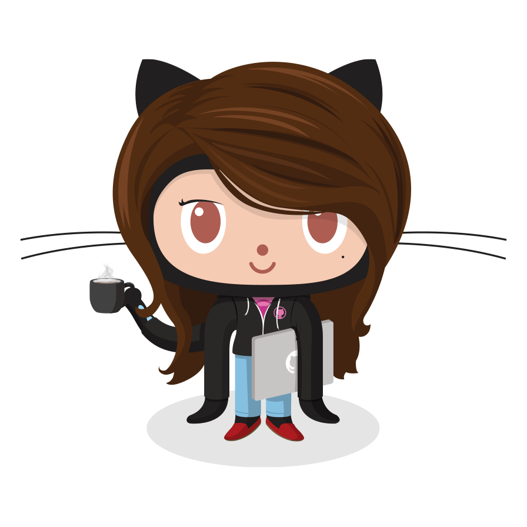

Página com pequenos fragmentos de styles
Desenvolvido para disciplina de Frontend UC-02833
EFA - Técnico em Desenvolvimento de Software | Construindo na programação
Este é o segundo parágrafo é apenas para encher linguiça.
Todos estes trabalhos, entre outros, poderão ser visualizados na página do Repositório Styles - GitHub.